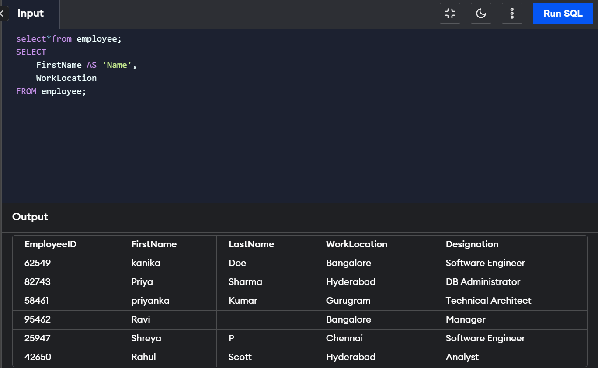
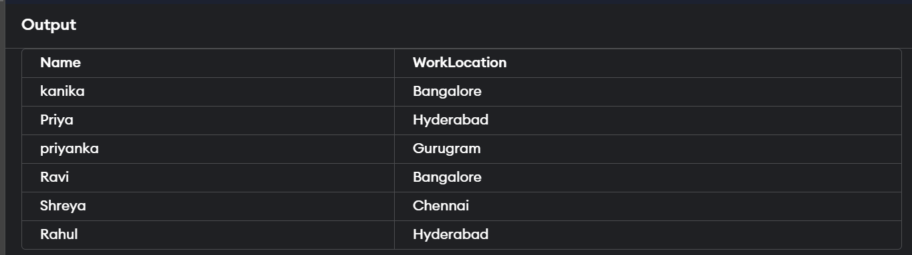

Querying Database Table
SQL Query is used to query or retrieve information from the databases.
We can perform the following operations using the SQL query --
1.Use SQL query to create a new database and insert data into the database
2.Use the SQL query to retrieve (or fetch) data from the database. Also, to modify or update the existing
data in the database.
3.To delete or drop the data or table from the database using the SQL query . Also, we can create a new table
after that
4.Using the SQL query to set permissions for the tables, views and procedures. Also, to create functions,
views and stored procedures.
How To Write SQL Query?
The basis of a query in SQL Server is the SELECT sentence which allows selecting the data to be displayed.
An SQL SELECT statement retrieves records from a database table according to clauses (for example, FROM
and WHERE) that specify the criteria based on which our data will be selected. The syntax for the SQL SELECT
statement is:
SELECT column1, column2
FROM table1, table2
WHERE column1 = 'xyz' and column2 = 'abc';
In the above SQL statement:
The SELECT clause specifies one or more columns to be retrieved from the database. To specify multiple columns,
we should use a comma and a space between the column names. However, if we want to retrieve all columns, we can
use the wild card * (an asterisk) SELECT * FROM ....
The FROM clause specifies one or more tables that are to be queried. We can use a comma and space between the
table names while specifying multiple tables, for example, FROM Names, Addresses, Phone_Numbers, where the Names,
Addresses, etc. are the table names.
The WHERE clause selects only the rows in which the specified column contains the mentioned value. WHERE allows
you to filter a query to be more specific. The value is generally enclosed in single quotes (for example, WHERE
color = 'teal').
The semicolon (;) is the statement terminator. However, if you have a single-line SQL query statement,
you may skip the semicolon (;). But it is mandatory if you have multi-lines of the query. In general, it is a
better practice to include the semicolon after every terminating statement of the SQL query.
SQL stands for Structured Query Language. It is a language that is used to get information from databases.
An SQL SELECT statement retrieves records from a database table according to clauses (for example, FROM and WHERE) that specify criteria. The data returned is stored in a result table called the result-set.
The FROM clause specifies one or more tables to be queried. The WHERE clause selects only the rows in which the specified column contains the specified value.
We can perform all the create, read, update, and delete operations using SQL queries. Apart from that, we can also set permissions for the tables, views and procedures.
We can perform different operations like AND, OR, NOT, IN, and many others while querying our databases.

